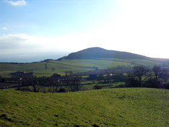

Peak Hill Llamas is based on a working farm on East Devon’s Jurassic Coast.
It is located between the Regency town of Sidmouth and the village of Otterton.
The farm, which offers excellent B & B Accommodation, is situated in a hamlet called Pinn, nestling in the valley below Peak Hill - a sheer 156m high red sandstone cliff, and Mutter’s Moor - an area of pebblebed heathland named after the 19th century smuggler Abraham Mutter who operated in the area.
Mutter was an accomplice of Devon’s most notorious smuggler Jack Rattenbury, and used his legitimate job of distributing wood and turf that he had cut from Peak Hill as a cover for the transport and sale of contraband.
In January 2007 the area relived its smuggling past after the grounding of the 62000 tonne container ship MSC Napoli one mile east of Sidmouth.
Hundreds of looters flocked to Branscombe beach to salvage what they could from the 40 containers that were washed up - from valuable BMW motorbikes and car parts to shampoo, nappies and dog food.
This was one of the biggest wrecking incidents in recent years and received worldwide media coverage.
On our llama walks through the fields on the top of Peak Hill we have had a clear view of the stricken ship and the ongoing salvage operation.
Peak Hill’s soil originally had a layer of chalk, but over the years this has been weathered away to leave a layer of clay with flints.
These flints, left lying on the top of the hill, were very useful to the earliest occupants of the Sidmouth area who discovered that by careful chipping away, a sharp edge could be obtained to make axes and other implements.
Beautifully worked flints such as arrowheads, piercers, borers and scrapers have been found - placing Sidmouth’s first occupants at around 3,300 BC.
Many of these Stone Age implements have been collected over the years and are now on display in the local museums (Exeter Museum holds approximately 25000 of these flints found in the Sidmouth area).
Today there is still a possibility of ancient flint implements lying undiscovered in the farm’s fields and on our llama walks we have picked up a few flints which do appear to have been worked.
The farmland supports a rich diversity of wildlife including many species of birds.
It is said that the best way to get close to nature is on foot - and we have found that to be particularly true if you are accompanied by llamas!
We have noticed that our llamas, with their amazing eyesight and natural curiousity will often draw our attention to all kinds of animals and birds that we otherwise might not have noticed - from a fox crossing a neighbouring field to a pheasant hiding in the long grass, a pair of yellowhammers flitting amongst the gorse, or a buzzard soaring above.
Sidmouth, with its beautiful scenery and old-world charm, has been used as a TV film location for a number of period dramas.
The farm itself has been used as a location for the filming of an episode of Jeeves and Wooster, and most recently in 2005 for an episode of Miss Marple - in which the final scene was filmed in one of the fields where we walk our llamas, on the top of Peak Hill.